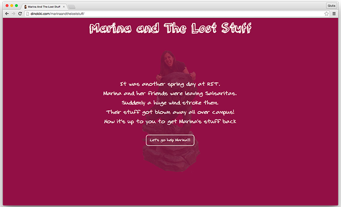
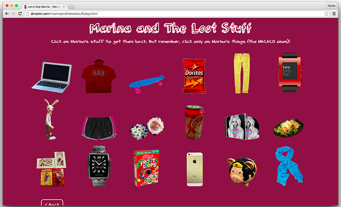
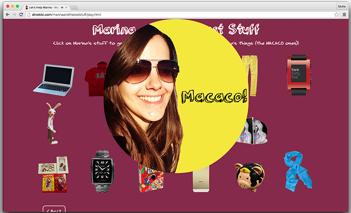
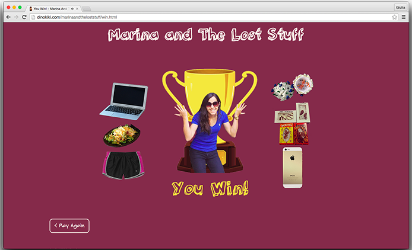

MARINA AND THE LOST STUFF

PORQUE FAZER UM JOGO DE PRESENTE DE AMIGO SECRETO
Em 2013/2014 eu tive a oportunidade de fazer um intercâmbio pelo programa Ciência Sem Fronteiras no Rochester Institute Of Technology - Estados Unidos com outros estudantes Brasileiros. Como o Brasil é muito grande e a maioria não mora próximo um do outro resolvemos fazer um amigo secreto virtual. Alguns cantaram, outros fizeram vídeos engraçados mas eu resolvi fazer um jogo com referências a quase todos que compartilharam essa experiência tão incrível do intercâmbio.




MAS EU DEVERIA JOGAR MESMO NÃO SABENDO DAS REFERÊNCIAS?
O jogo é mais divertido quando você conhece todo mundo incluído e o quão forte é o vento no Rochester Institute of Technology. Mas você pode jogar e tentar adivinhar quais items são da Marina. Eu recomendo tentar!
Entre em contato!